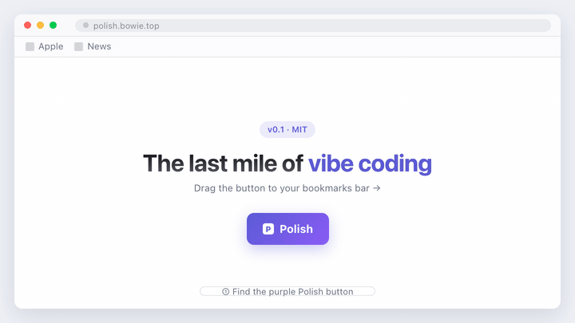
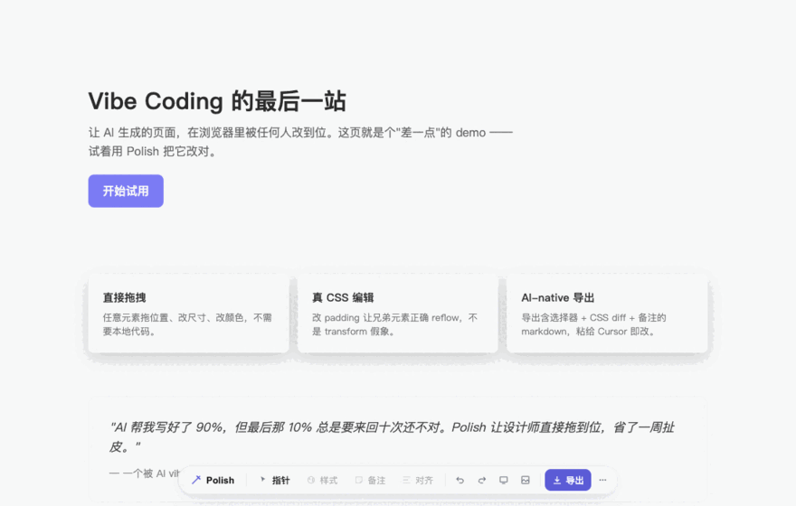

Make any AI-generated page editable in the browser. Anyone — designers, PMs, anyone without local code — drags, recolors, retypes, and exports an AI-ready diff back to Cursor / Claude / your dev.
drag this button to your bookmarks bar


AI shipped your page. It's almost right — but not right. Then the back-and-forth begins.
They look at the Vercel preview and feel the title is too small, the cards too cramped, the button too pale. But they have no local code, no dev environment — only screenshots and words.
They get a paragraph of "4px to the left, bigger font, one shade darker." AI guesses, devs rework, round 5 still isn't right.
A simple polish takes a week. The vibe-coding promise: page in minutes → arguing for hours, and nobody is happy.
Turns any deployed page into an editable canvas. Designers drag it into shape → one-click export an AI-ready diff → dev or AI applies it to source.
Any URL: Vercel preview, Storybook, your own server.
Polish toolbar slides up at the bottom.
Real CSS edits: color, font, spacing, radius.
Paste to Cursor / Claude → code is updated.
Color · font size · weight · line height · spacing · radius · shadow · opacity. Editing padding actually reflows siblings — not a transform fake-out.
Markdown with selectors + CSS diffs + notes. Cursor / Claude can apply it without translation from a human.
"Needs more breathing room" — intent that can't be expressed in pixels still gets through. LLMs read notes and respect design language.
When dragging an element, Polish shows alignment guides against siblings (Figma-style) and snaps to edges and centers.
Edits encoded into the URL. Devs open the same link and see all overrides — no copy-pasting screenshots.
One-tap viewport switching: 375 / 768 / 1024 / 1280 / 1440. Validate the same edits across breakpoints.
Drop in a design mockup as a translucent overlay and align pixel-by-pixel.
Detects Tailwind projects and suggests equivalent utility classes (pl-6 instead of padding-left:24px).
Single file, no npm tree, works as a bookmarklet. Without ?polish=1 it's a complete no-op.
Bottom pill bar, neutral palette, single accent. Reads like Vercel Toolbar or Linear, not like a debugger.
Three ways. Pick one.
Show the bookmarks bar with ⌘+⇧+B (Windows: Ctrl+Shift+B), then drag the purple Polish button onto it. That's it — no install, no extension.
Tip: if dragging didn't work, right-click → Bookmark this link, or download the bookmark file.
Drop this at the end of your html, then add ?polish=1 to the URL.
<script src="https://polish.bowie.top/polish.js"></script>
npm install polish import 'polish';